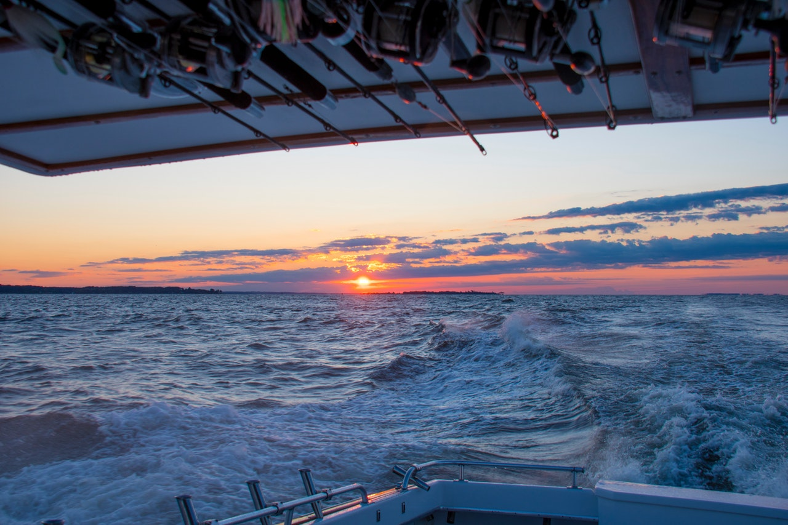

Comfort
- Self draining deck
- 43 liter removable fuel tubs with retainer (4)
- Total of 172 liters of fuel
- 70PSI/4.8Bar deck washer
- Removable fold down custom four poster canopy
- double door lockable wide centre console with shelf and windscreen
- GME Bluetooth Radio
- planetary autopilot holdfast power steering
- Chaptain's chair, eski ice box, dining table, inboard bench seating
- seating for 15
Fishing
- GPS Chart Plotter & fish finder with unimap of Australia
- Canopy mounted rocket launcher in transit rod holders
- Extreme sport fisher stern rod holders (4). Adjustable 90-180°
- 50Lt live bait well with 550 GPH external electric bait pump, overflow and drain bung with aerated feed.
- Deck Sportlight
- Kill tank


Quality
- Low friction Posi Lift Hull ™
- Sea State 6
- Dual, above deck on tube, battery retainers
- Anchore retainer
- Resettable fuse switch
- Nav and anchor lights with external GPS, radio antenna platform
- Ocean Craft Patented Airtight buoyancy section with disclosing bung (9)
- 4,000lt/1,100gal per hour bilge well pump
- Grab rails, entry exit rungs
- Inboard tie down points
- Dual eye trailer
- 2.7T payload